Indexing and Hashing¶
9.1 Basic Concepts¶
索引机制是为了加快访问所需数据的速度
An index file索引文件 consists of records(called index entries索引项), of the form:
- Search key: attribute or set of attributes used to look up records in a file.
- Index files are typically much smaller than the original data file.
两种基本的索引方式: - Ordered indices(顺序索引):
search keys are stored in sorted order. - Hash indices(散列索引):
search keys are distributed uniformly across "buckets" by a "hash function".
Index Evaluation Metrics¶
衡量索引技术时，主要关注时间效率和空间效率：
- Access types supported efficiently
- 精确匹配查询：例如
WHERE Col = v，查找某个属性值等于特定值的记录。 - 范围查询：例如
WHERE Col BETWEEN v1 AND v2，查找某个属性值落在指定区间的记录 - 对比：Hash index 对精确匹配非常高效，但对范围查询支持很差；而 Ordered index 对范围查询非常友好
- 精确匹配查询：例如
- Access time
- Insertion time
- Deletion time
- Space overhead
9.2 Ordered Indices¶
In an ordered index, index entries are stored sorted on the search-key value.
Basic Concepts¶
Sequentially ordered file(顺序排序文件)
- The records in the data file are ordered by a search-key.
Primary index(主索引) - 与对应的数据文件本身的排列顺序相同的索引称为主索引，也称为clustering index(聚集索引)
- 主索引的搜索键通常是但并非一定是主码
- 非顺序排序文件没有 primary index，但 relation 可以有 primary index
- index-sequential file(索引顺序文件)：Sequentially ordered file with a primary index.
Secondary index(辅助索引) - 搜索键的指定顺序与文件记录的物理顺序不同的索引，也称为non-clustering index(非聚集索引)
Two types of ordered indices:
- Dense index(稠密索引)
- Sparse index(稀疏索引)
9.2.1 Dense Index Files¶
Dense index（稠密索引）：文件中的每一个搜索键值，都会在索引中出现对应的条目
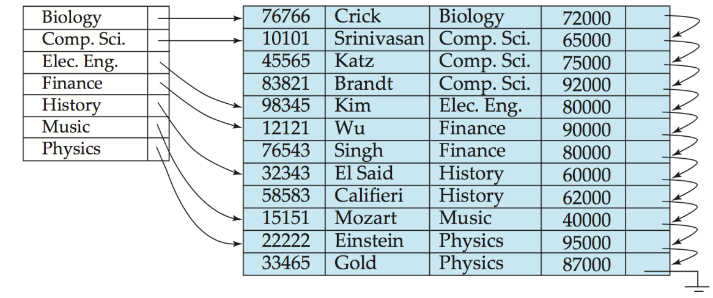
- 如果搜索键是唯一的（例如主键）
那么每个索引条目会直接指向一条具体的数据记录 - 如果搜索键不是唯一的（例如有重复值的列）
一个索引条目可能会指向一个“桶”，桶里包含了所有具有该搜索键值的记录的指针 - 稠密索引既适用于顺序文件，也适用于非顺序文件。
9.2.2 Sparse Index Files¶
Sparse index（稀疏索引）: contains index entries for only some search-key values.
- 通常是一个数据块对应一个索引条目，仅当数据文件中的记录是按照搜索键顺序排列时才适用
- 要查找搜索键值为 \(K\) 的记录，步骤如下：
- 在索引中找到那个小于 \(K\) 的最大搜索键值对应的索引记录
- 从该索引条目指向的记录开始，在数据文件中进行顺序查找
Compared to dense indices:
- Less space overhead.
- Less maintenance overhead for insertions and deletions.
- Generally slower for locating records.
9.2.3 Secondary Indices¶
实际应用中常有多种属性作为查询条件，因此需要在非主排序属性上建立辅助索引。
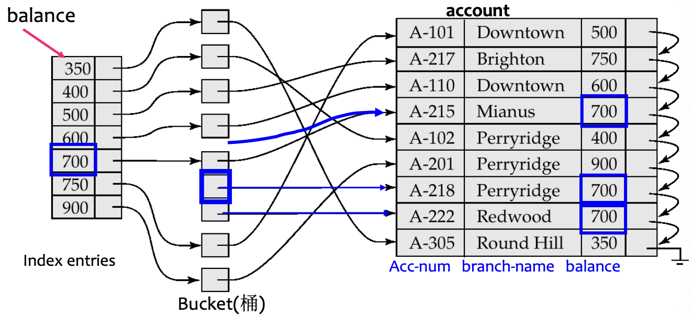
Secondary index:
- 为每一个搜索键值都设有一个索引记录。
- 该索引记录指向一个“桶”。
- 桶中包含了指向所有具有该特定搜索键值的实际记录的指针。
Secondary index must be dense
辅助索引不能使用稀疏索引，因为数据文件本身不是按照该 search key 排序的。每条满足条件的记录都必须能够被指针找到。最终还是需要主键来访问具体条目。
9.2.4 Multilevel Index¶
If a primary index is too large to fit in memory, access becomes expensive.
- 为了减少磁盘访问次数：
将保存在磁盘上的主索引视为一个顺序文件，在此基础上构建一个稀疏索引。 - Outer index: 主索引的稀疏索引；Inner index: 主索引文件本身
如果外层索引仍然太大，可以创建另一个层级。
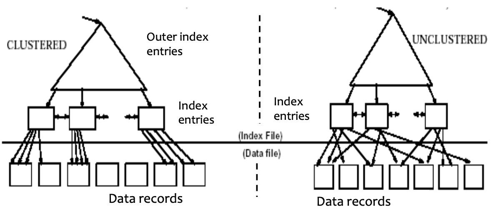
- 这种技术既适用于聚簇索引，也适用于非聚簇索引。
- 在进行插入或删除操作时，所有层级的索引都必须进行更新。
9.2.5 Index Update: Deletion¶
General procedure:
- Find and delete the record in the data file.
- Update the index file.
Dense index deletion
- 如果被删除的记录是其搜索键值的唯一记录，则删除对应的索引条目（单记录, 即 search-key 有唯一性）
- 如果还有其他记录拥有相同的键值 (多条记录，即 search-key 无唯一性)：
- 如果该索引条目包含多个指针，仅删除指向那条已删除记录的指针（对应辅助索引的情况）
- 如果是主索引，且被删除的记录正是该条目指向的第一条记录，则将指针修改为指向下一条记录
- 其他情况下，无需更改
Sparse index deletion
- 如果被删除记录的搜索键值没有出现在索引中，则无需执行任何操作
- 如果存在对应的索引条目：
- 用数据文件中下一个搜索键值来替换该条目
- 如果这个“下一个”搜索键值已经有了自己的索引条目，直接删除原来的条目即可
For multilevel indices: 由底层逐级向上层扩展，每一层的处理过程与上述单层索引情况下类似
9.2.6 Index Update: Insertion¶
- 使用待插入记录中的搜索键值进行查找
- 将记录插入数据文件
- 根据索引类型更新索引
Dense index insertion
- 如果搜索键值在索引中不存在，则插入一条新的索引项
- 如果搜索键值在索引中已经存在：
- 如果该索引项维护了多个指针，则添加一个指向新记录的指针
- 其他情况下，无需更改
Sparse index insertion
（假设每个数据块对应一条索引项）
- 如果创建了新块，则将新块中的第一个搜索键值插入索引
- 如果新记录是其所在块中搜索键值最小的记录，则更新对应的索引项
- 否则无需更改
9.2.7 Secondary Indices¶
- 有时候需要筛选出所有数据中符合特定条件的数据，这个时候可以使用secondary index
- We can have a secondary index with an index record for each search-key value
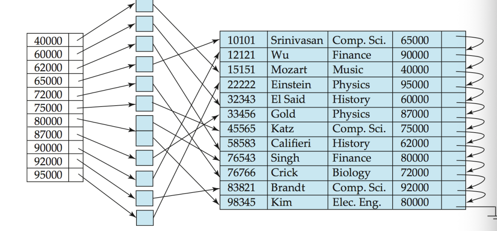
- 索引记录指向一个桶（bucket），该桶包含了指向所有具有该特定搜索键值的实际记录的指针
- 辅助索引（secondary Indices）必须是稠密的
9.2.8 Primary and Secondary Indices¶
索引能显著提升查询效率，但每个索引都会带来更新开销
- 当文件被修改时，该文件上的每一个索引都必须更新
- 使用主索引进行顺序扫描是高效的
- 使用辅助索引进行顺序扫描代价高昂：
- 每次记录访问都可能需要从磁盘读取一个新的数据块
- 磁盘块读取可能耗时数毫秒，远慢于内存访问
9.3 B+ Tree Index Files¶
B+树索引是索引顺序文件的一种替代方案
- Disadvantage of indexed-sequential files：
- 随着文件增长，性能会下降，因为可能产生大量溢出块
- 需要定期对整个文件进行重组
- Advantage of \(B^+\)-tree index files：
- 在插入和删除过程中，通过较小的局部调整自动重组自身
- 无需对整个文件进行重组即可维持性能
- (Minor) disadvantage of \(B^+\)-trees：额外的插入和删除开销，以及空间开销
9.3.1 Definition¶
A \(B^+\)-tree is a rooted tree satisfying the following properties:
- 从根到叶的所有路径长度相同，即 B+ 树是平衡的
- 除根节点和叶节点外，每个节点有 \(\lceil n/2 \rceil\) 到 \(n\) 个子节点
- 叶节点有 \(\lceil (n-1)/2 \rceil\) 到 \(n-1\) 个值
- 特殊情况：
- 如果根不是叶节点，则至少有 2 个子节点
- 如果根是叶节点，则可以有 \(0\) 到 \(n-1\) 个值
9.3.2 Node Structure¶
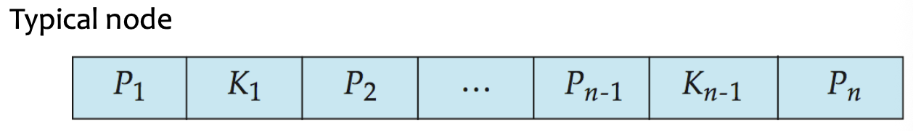
- \(K_i\) 是搜索键值，节点中的搜索键有序排列：
- \(P_i\) 是指针
- 在非叶节点中：指向子节点的指针。
- 在叶节点中：指向记录或记录桶的指针。
- 通常一个节点对应一个 block
Leaf Nodes¶
对于 \(i = 1,2,\dots,n-1\)：
- 指针 \(P_i\) 指向搜索键值为 \(K_i\) 的文件记录，或指向一个包含文件记录指针的桶
- 仅当搜索键不是主键时才需要桶
- 每个搜索键都出现在叶节点中，类似于稠密索引
性质：
- 若 \(L_i, L_j\) 是叶节点且 \(i < j\)，则 \(L_i\) 中的所有搜索键值均小于 \(L_j\) 中的值
- 每个叶节点包含 \(\lceil (n-1)/2 \rceil\) 到 \(n-1\) 个搜索键
- \(P_n\) 指向按搜索键顺序排列的下一个叶节点，这便于顺序处理和范围查询
Non-Leaf Nodes¶
非叶节点构成叶节点之上的多层稀疏索引
对于具有指针 \(P_1,\dots,P_n\) 和键 \(K_1,\dots,K_{n-1}\) 的非叶节点：
- 子树 \(P_1\) 中的所有搜索键均小于 \(K_1\)
- 对于 \(2 \leq i \leq n-1\)，子树 \(P_i\) 中的所有搜索键满足：
- 子树 \(P_n\) 中的所有搜索键大于或等于 \(K_{n-1}\)
B+-树总结
- 非叶层级构成了一个稀疏索引的层级结构。
- 树的高度很小，与主文件大小成对数关系。
- 插入和删除可通过局部重构在对数时间内完成。
- 逻辑上相邻的节点在物理上不必相邻，因为节点之间通过指针连接。
9.3.3 Queries¶
高度上界：
- 如果文件中有 \(K\) 个搜索键值，树的高度不超过：
- 一个 node 通常和一个 block 的大小相同，例如 4KB。
- \(n\) 通常在 100 左右。
- 当有 \(1,000,000\) 个搜索键值且 \(n=100\) 时，一次查找最多访问：
9.3.4 Handling Duplicates¶
当存在重复搜索键时：无法保证 \(K_1 < K_2 < \dots < K_{n-1}\)
- 只能保证 \(K_1 \leq K_2 \leq \dots \leq K_{n-1}\)
修改后的查找思路： - 即使 \(V = K_i\)，也遍历 \(P_i\)
- 到达叶节点后，如果该叶节点只包含小于 \(V\) 的值，则移动到右兄弟节点
- 要打印所有值为 \(V\) 的记录，先找到第一个出现位置，然后遍历连续的叶节点
Non-Unique Search Keys
处理非唯一搜索键的替代方案：
- 将桶放在单独的块上：不是好主意，因为会增加额外的块访问
- 每个键附带一个元组指针列表
- 空间开销低，简单查询无额外开销
- 如果存在大量重复，删除操作可能代价较高
- 通过添加记录标识符使搜索键唯一
- 额外的存储开销，插入和删除更简单，被广泛采用
9.3.5 Insertion¶
- 找到搜索键值应出现的叶节点
- 如果搜索键值已存在于叶节点中：
- 将记录添加到文件中；
- 如有必要，向桶中添加指针
- 如果搜索键值不存在：
- 将记录添加到主文件中（如有必要，创建桶）
- 如果叶节点中有空间，插入
(key, pointer)对； - 否则分裂该节点
叶节点的分裂：
- 取 \(n\) 个
(search-key, pointer)对（包括新插入的），按顺序排列 - 将前 \(\lceil n/2 \rceil\) 个对放入原节点，将剩余的对放入新节点
- 令新节点为 \(p\)，将 \((k, p)\) 插入父节点，其中\(k\) 为 \(p\) 中最小的键值
- 如果父节点已满，则分裂父节点并向上传播分裂
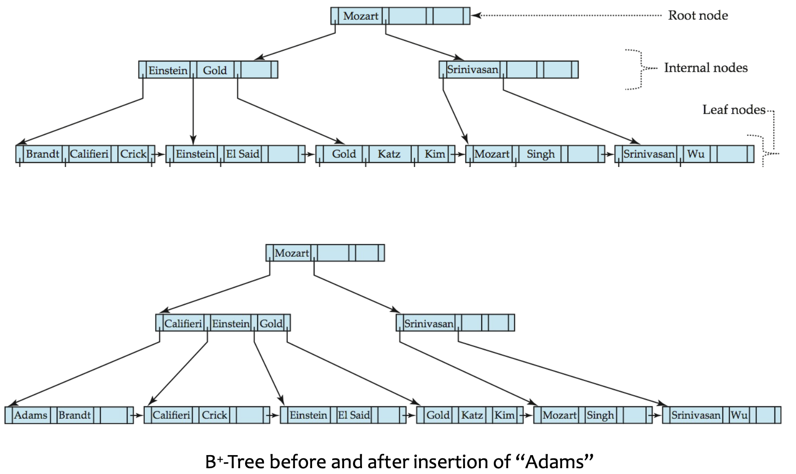
非叶节点的分裂：
- 将新的
(key, pointer)插入一个临时的内存节点中 - 将前半部分保留在原节点，后半部分移入新节点，中间的分离键推入父节点
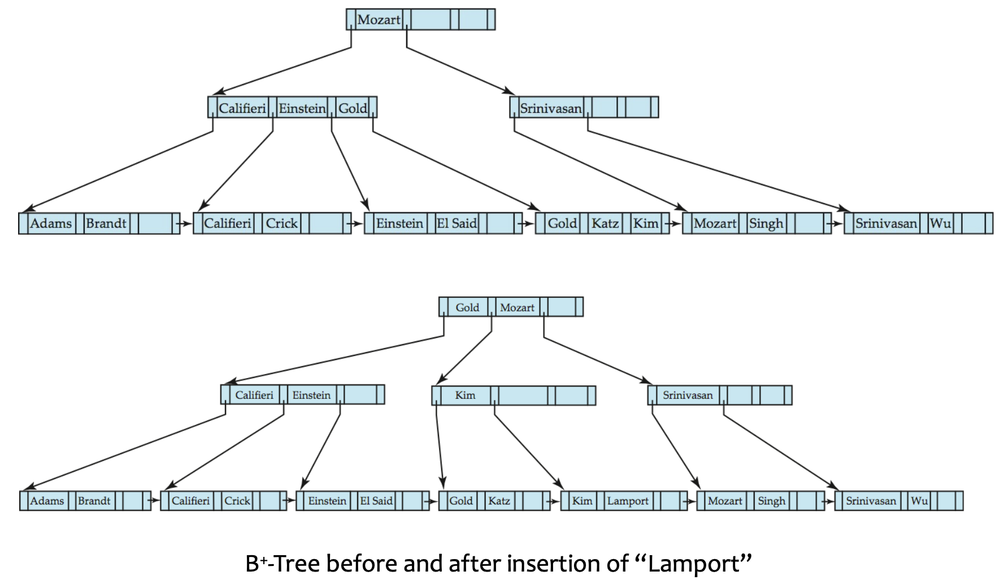
9.3.6 Deletion¶
- 找到待删除的记录，将其从主文件和桶（如果存在）中将其移除
- 从叶节点中移除
(search-key, pointer)
如果节点中的条目过少：
- 合并兄弟节点：如果该节点和兄弟节点的条目可以放入同一节点中
- 将所有搜索键值放入左节点，并删除另一个节点
- 从父节点中删除对应的指针对 \((K_{i-1},P_i)\)，然后递归地改变上层结构
- 重新分配指针：如果合并后放不下
- 在该节点和兄弟节点之间重新分配条目
- 更新父节点中对应的搜索键值
如果删除后根节点只有一个指针：
- 删除根节点，其唯一子节点成为新的根
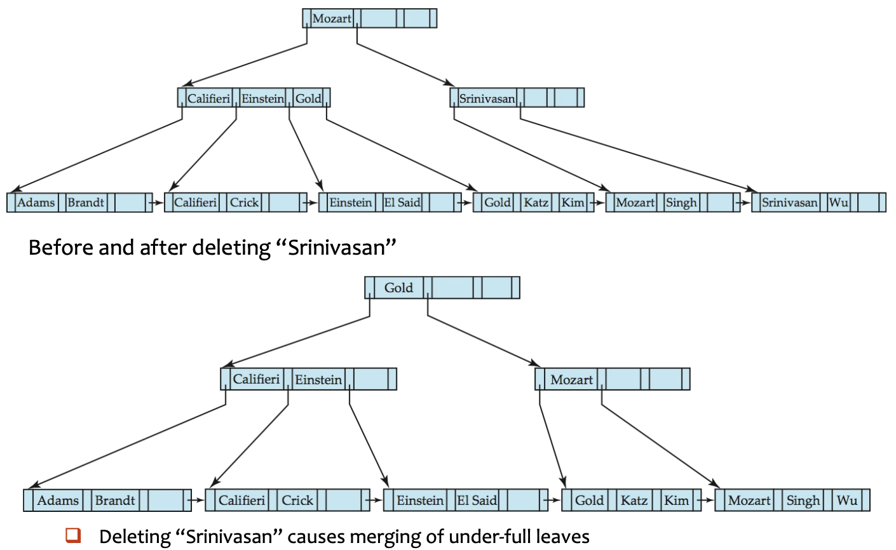
9.3.7 File Organization¶
B+-树也可以直接组织数据记录，而不仅仅组织索引项。
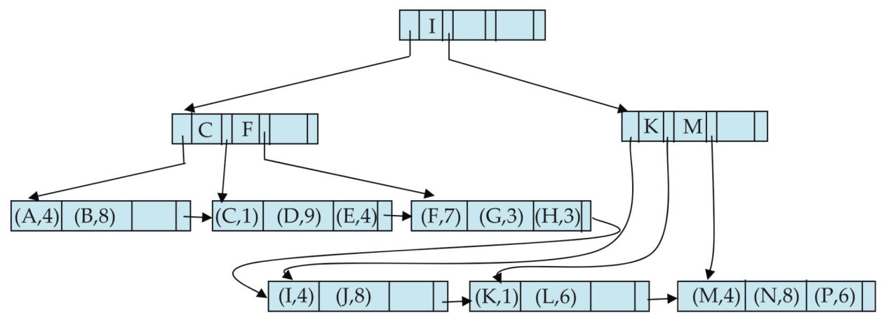
- 良好的空间利用率很重要，因为数据记录比指针占用更多空间。
- 为提高利用率，分裂/合并时的重分配可以涉及更多兄弟节点。
- 涉及更多兄弟节点可以减少不必要的分裂/合并操作。
9.4 *B Tree Index Files¶
\(B-\text{Tree}\) 与 \(B^+ - \text{Tree}\) 类似，但有一个重要区别：
- \(B-\text{Tree}\) 中搜索键值只出现一次，非叶节点中的搜索键不会在叶节点中再次出现
- 因此，非叶节点中的每个搜索键需要一个额外的指针字段，指向对应的桶或文件记录。
- 所有节点都是广义的叶节点
\(B-\text{Tree}\) 索引的优点：
- 可能比对应的 B+-树使用更少的节点
- 有时在到达叶节点之前就能找到搜索键值
\(B-\text{Tree}\) 的缺点： - 只有一小部分搜索键值能被提前找到
- 非叶节点更大，因此扇出减少
- B-树通常比对应的 B+-树更深
- 插入和删除更复杂，实现更困难
9.5 *Static Hashing¶
==Bucket（桶）==是一个包含一条或多条记录的存储单元（一个桶通常是一个磁盘块）
在散列文件组织中：
- 记录的桶通过散列函数直接从其搜索键值获得
- 散列函数 \(h\) 将搜索键值映射到桶地址：
其中 \(K\) 是所有搜索键值的集合，\(B\) 是所有桶地址的集合
9.5.1 Hash Function¶
Hash Function用于：访问、插入、删除
- 具有不同搜索键值的记录可能被映射到同一个桶，因此可能需要顺序搜索整个桶
Worst hash function：
- 将所有搜索键值映射到同一个桶，访问时间与文件中搜索键值的数量成正比
Ideal hash function：
- 将搜索键值均匀分布到各个桶中。
- 每个桶接收的记录数大致相同。
- 分布应与搜索键值的实际分布无关。
Typical hash function：
- 基于搜索键的内部二进制表示进行计算。
- 示例：对于字符串，将各字符的二进制表示相加，然后对桶数取模。
9.5.2 Handling of Bucket Overflows¶
桶溢出可能由以下原因导致：
- 桶的数量不足
- 记录分布不均：多条记录具有相同的搜索键值；所选散列函数不够均匀
虽然溢出概率可以降低，但无法完全消除
溢出链（Overflow chaining）
- 将某个桶的溢出桶通过链表链接在一起。
- 这种方案称为闭散列（closed hashing）
- 开散列不使用溢出桶，但不适用于数据库应用
9.5.3 Hash Indices¶
Hash 可用于文件组织、索引结构创建
散列索引（Hash index）：将搜索键及其关联的记录指针组织成散列文件结构
- 严格来说，散列索引始终是辅助索引，如果文件本身使用散列组织，则不需要使用相同搜索键的单独主散列索引
- 但在实践中 hash index 一词可能既指辅助散列索引结构，也指散列组织的文件
9.5.4 Deficiencies of Static Hashing¶
在静态散列中，\(h\) 将搜索键值映射到一组固定的桶地址。
Bug
- 数据库随时间增长。
- 如果初始桶数太少，会产生大量溢出，性能下降。
- 如果预先分配大量桶以应对未来文件大小，初期会浪费空间。
- 如果数据库缩小，同样浪费空间。
- 使用新散列函数进行定期重组的代价高昂。
解决方向：使用动态散列，桶的数量可以动态调整。
9.6 *Dynamic Hashing¶
动态散列适用于大小会增长和收缩的数据库,它允许动态修改散列函数。
9.6.1 Extendable Hashing¶
- Hash function 生成大范围内的值，通常是 \(b\) 位整数，例如 \(b=32\)
- 使用散列值的前缀（前 \(i\) 位，其中 \(0 \leq i \leq 32\)）来索引桶地址表
- 桶地址表大小：\(2^i\)，最初 \(i=0\) 且 \(i\) 随数据库的增长和收缩而增减。
- 桶地址表中的多个条目可能指向同一个桶
- 因此，实际桶数可以小于 \(2^i\)。
Info
每个桶 \(j\) 存储一个值 \(i_j\)：指向同一个桶的所有表条目具有相同的前 \(i_j\) 位
- \(i\) 是全局深度（global depth），表示桶的地址有 \(i\) 位
- \(i_j\) 是桶 \(j\) 的局部深度（local depth），表示 bucket 中每个 entry 的前 \(i_j\) 位（前缀）相同
假设 \(i=3\)，有三个桶：
桶A：i_j = 2，前缀 "10"
桶B：i_j = 3，前缀 "011"
桶C：i_j = 1，前缀 "0"
映射关系：
桶地址表（i=3，共 2^3=8 个格子）：
索引 前缀匹配逻辑 指向
─────────────────────────────────────
000 前1位是0 ✓ → 匹配桶C → 桶C
001 前1位是0 ✓ → 匹配桶C → 桶C
010 前1位是0 ✓ → 匹配桶C → 桶C
011 前3位是011 ✓ → 匹配桶B → 桶B
100 前2位是10 ✓ → 匹配桶A → 桶A
101 前2位是10 ✓ → 匹配桶A → 桶A
110 前1位是1 ✗, 前2位是10 ✗ → 无匹配（如果存在其他桶）
111 ...
Find¶
定位包含搜索键 \(K_j\) 的桶：
- 计算 \(h(K_j) = X\)，得到 32 位的整数
- 使用 \(X\) 的前 \(i\) 个位，作为桶地址表的索引
- 顺着该索引找到对应的桶。
Insert¶
插入搜索键值为 \(K_j\) 的记录：
- 使用查找过程定位其桶
- 如果桶中有空间，插入记录
- 否则，分裂桶并重试插入
分裂桶 \(j\)：
情况 1：\(i > i_j\)（有多个表指针指向桶 \(j\)）
- 分配一个新桶 \(z\)
- 将 \(i_j\) 和 \(i_z\) 设为旧的 \(i_j + 1\)
- 将指向 \(j\) 的表条目的后一半改为指向 \(z\)
- 原本可能 01 指向桶 X，现在 010 指向桶 X，011 指向桶 Y
- 移除并重新插入桶 \(j\) 中的每条记录
- 根据前 \(i_j+1\) 位区分放置的位置
- 重新计算 \(K_j\) 的新桶并插入记录，如果桶仍满，可能需要进一步分裂
情况 2：\(i = i_j\)（只有一个表指针指向桶 \(j\)）
- 增加 \(i\) 并将桶地址表大小翻倍
- 将每个旧表条目替换为指向相同桶的两个条目
- 重新计算 \(K_j\) 的表条目
- 此时 \(i > i_j\)，故应用情况 1
如果桶分裂达到最大散列前缀长度 \(b\)：创建溢出桶，而不是继续分裂
Delete¶
删除键值：
- 在其桶中定位
- 将其移除
- 如果桶变为空，可将其移除并做相应表更新
- 可以合并桶
- 只能与伙伴桶（buddy bucket）合并
- 伙伴桶必须具有相同的局部深度 \(i_j\) 和相同的 \((i_j - 1)\) 位前缀
- 桶地址表大小可以减少
- 这代价较高，仅当桶数远小于表大小时才应进行
9.7 *Comparison of Ordered Indexing and Hashing¶
| 查询 / 需求 | 顺序索引 | 散列索引 |
|---|---|---|
| 等值查询 | 良好 | 通常更好 |
| 范围查询 | 良好 | 差 |
| 顺序处理 | 良好 | 不适合 |
| 动态增长 | B+-树处理良好 | 动态散列处理良好 |
| 最坏情况保证 | 更好 | 可能受溢出/不均影响 |
| 需考虑的因素： |
- 定期重组的代价。
- 插入和删除的相对频率。
- 是否应以最坏情况访问时间为代价来优化平均访问时间。
- 预期的查询类型。
9.8 Write-optimized indices¶
9.8.1 LSM Tree¶
==Log Structured Merge Tree（日志结构合并树）==旨在优化写密集型工作负载
仅考虑插入和查询：
- 记录首先插入内存中的树 \(L_0\)。
- 当内存中的树满时，记录被移动到磁盘，成为 \(L_1\)
- \(L_1\) 可以通过将现有 \(L_1\) 树与 \(L_0\) 中的记录合并，自底向上构建
- 当 \(L_1\) 超过某个阈值时，将其合并到 \(L_2\)
-
以此类推到更多层级， \(L_{i+1}\) 的大小阈值是 \(L_i\) 阈值的 \(k\) 倍
-
优点：
- 插入操作主要使用顺序 I/O
- 叶节点是满的，避免空间浪费
- 与普通 B+ 树相比，减少了每条插入记录的 I/O 操作次数（在一定规模内）
- 缺点：
- 查询需要搜索多棵树
- 每层的内容可能被整体复制多次
步进合并索引（Stepped-merge index）
- LSM 树的变体，每层有多棵树
- 相比 LSM 树降低了写代价
- 查询代价更高
- 布隆过滤器可以避免在大多数树中查找
LSM 中的删除：
- 通过添加特殊的删除条目来处理。
- 查找可能同时找到原始条目和删除条目；只应返回没有匹配删除条目的条目。
- 合并时，如果删除条目与原始条目匹配，二者都会被丢弃。
- 更新可以通过插入 + 删除来实现。
LSM 树适用于：
- 基于磁盘的索引
- 基于闪存的索引，因为减少了擦除操作
- 大数据存储系统，如 BigTable、Cassandra、MongoDB、LevelDB、MyRocks
9.8.2 Buffer Tree¶
核心思想：
- B+ 树的每个内部节点都有一个缓冲区用于存储插入，当缓冲区满时，插入被移动到下层
-
有了大缓冲区，每次可以将大量记录移动到下层，每条记录的 I/O 相应减少
-
优点：
- 查询开销比 LSM 树小
- 可用于任何树索引结构
- 在 PostgreSQL 的 GiST 索引中使用
- 缺点：比 LSM 树有更多的随机 I/O
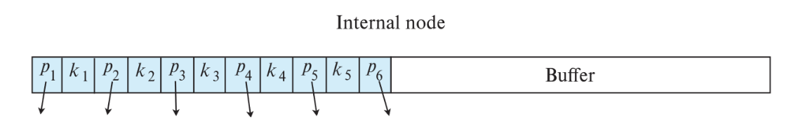
9.9 Index Definition in SQL¶
创建索引：
CREATE INDEX <index-name> ON <table-name> (<attribute-list>);
# example
CREATE INDEX b_index ON branch(branch_name);
CREATE INDEX cust_strt_city_index ON customer(customer_city, customer_street);
创建唯一索引：
CREATE UNIQUE INDEX uni_acnt_index ON account(account_number);
CREATE UNIQUE INDEX间接指定并强制搜索键为候选键。- 如果数据库支持 SQL 唯一完整性约束，这并非总是必要。
删除索引：
DROP INDEX <index-name>;
9.10 *Multiple-Key Access¶
有时查询包含多个搜索条件
SELECT account_number
FROM account
WHERE branch_name = 'Perryridge'
AND balance = 1000;
使用单属性索引的可能策略：
- 使用
branch_name上的索引，找出Perryridge分行的账户，然后检查balance = 1000是否成立。 - 使用
balance上的索引，找出余额为1000的账户，然后检查branch_name = 'Perryridge'是否成立。 - 使用两个索引分别获取两组记录指针，然后取交集
9.10.1 Indices on Multiple Attributes¶
假设在组合搜索键上建有索引：
对于：
WHERE branch_name = 'Perryridge' AND balance = 1000
组合索引可以直接获取同时满足两个条件的记录
它也可以高效处理：
WHERE branch_name = 'Perryridge' AND balance < 1000
但不能高效处理：
WHERE branch_name < 'Perryridge' AND balance = 1000
复合索引的前缀性质
联合索引通常对”从左到右的前缀条件”最有效。前面的属性如果不能有效缩小范围，后面的属性就难以被充分利用。
- 组合键中的第一个属性决定了主排序。
- 如果第一个条件是范围条件，可能会获取大量只满足第一个条件的记录。
9.10.2 Grid Files¶
网格文件用于加速涉及比较运算符的通用多搜索键查询
- 一个单一的网格数组
- 每个搜索键属性有一个线性刻度
- 维度数等于搜索键属性的数量
- 网格数组的多个单元格可以指向同一个桶
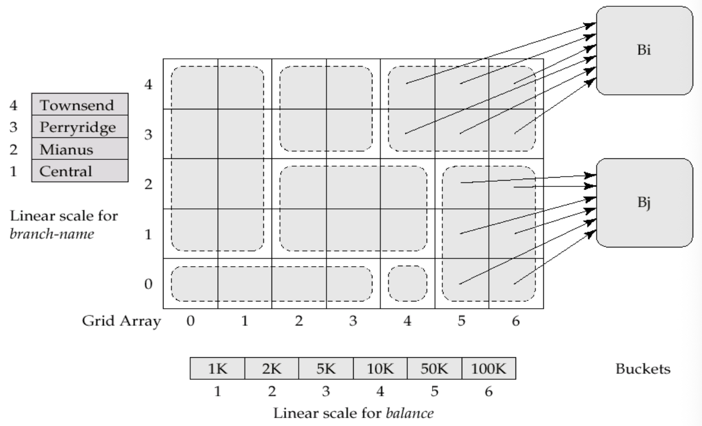
查找：
- 使用线性刻度定位单元格的行和列
- 沿指针找到对应桶
插入：
- 如果桶满了且有多个单元格指向它，则创建新桶
- 这一思想类似于可扩展散列，但在多个维度上工作
- 如果只有一个单元格指向该桶：创建溢出桶，或增大网格大小
问题：
- 线性刻度必须选择得当，使记录均匀分布在各个单元格中。
- 否则可能出现过多溢出桶。
- 定期重组可能有帮助，但代价非常高。
- 网格数组的空间开销可能很大。
- R-树是一种替代方案。
9.10.3 Bitmap Indices¶
位图索引是专为多键高效查询而设计的特殊索引
- 假设：
- 关系中的记录从 0 开始顺序编号
- 给定记录号 \(n\)，应能轻松获取记录 \(n\)
- 当记录为定长时尤其容易实现
- 适用属性：具有相对较少不同值的属性
- ==位图（Bitmap）==是一个位数组
- 对于属性值 \(v\)：
- 每个 \(v\) 有一个位图，位图的位数与记录数相同
- 如果记录在该属性上取值为 \(v\)，则对应位为 1，否则为 0
- 位图索引适用于多属性查询，对单属性查询作用不大
- 查询通过位图操作来回答：
- 交集：AND
- 并集：OR
- 取反：NOT
如果：
- 男性的位图为
10010 - 收入水平 \(L_1\) 的位图为
10100
则收入水平为 \(L_1\) 的男性：
优点：
- 位图索引通常远小于关系本身。
- 计数匹配元组非常快。
- 位图可以打包成机器字，一条 CPU 指令可处理 32 或 64 位。
删除与空值处理：
- 需要一个存在位图来指示有效的记录位置。
- 对于取反操作：
- 为正确处理
NOT(A = v)的 SQL 空值语义，还需与以下位图取交集：
位图索引的适用场景
位图索引适合低基数属性、多条件组合查询和统计计数；不适合高基数属性上的普通单点查询。